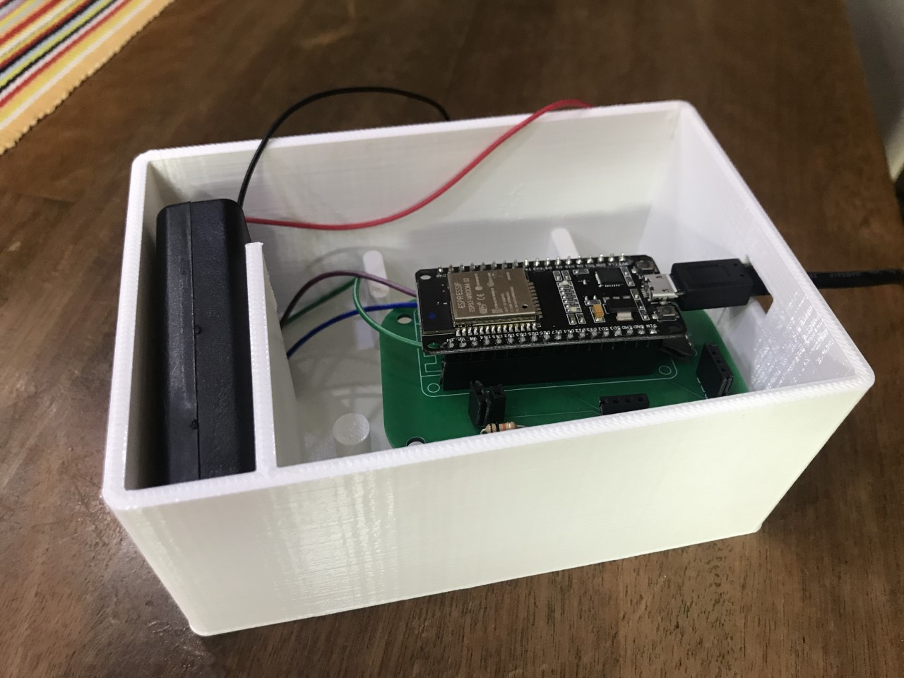

Week 1 - 4 : Internet of Things
Bij Smart Technology is de opdracht gegeven om een pomp automatisch aan te laten sturen. Dit wordt gedaan om ervoor te zorgen dat een plant automatisch water krijgt wanneer er bijvoorbeeld heel veel
licht op heeft gestaan en de grond heel droog is geworden. Er is een LDR in het systeem verwerkt en een sensor die de luchtvochtigheid meet. In het filmpje is te zien dat de pomp automatisch aanspringt wanneer de gegevens van de water threshold
lager uitkomt dan de 2tand.
Week 5 - 7: Printed Circuit Board De volgende stap was om meerdere onderdelen te vervangen voor een PCB. Via het bestand EAGLE kon er online een PCB gemaakt worden. Wanneer dit gelukt was moest je het inleveren op RobotExchange en zou daarna je ontwerp opgestuurd worden naar chine waar je PCB gemaakt werd. Na ongeveer 3 weken kon je de PCB ophalen op school en kon je componenten aan de PCB solderen.
Week 10 - 12: 3D Printing Hierna kwam het 3D printen. Om alle onderdelen als een mooi geheel te maken wordt er een bakje geprint waar alles in past. Dit wordt gemaakt via solidworks, we hebben 4 lessen gehad hoe solidworks werkt, hierna kon je zelfstandig een bakje gaan ontwerpen. Wanneer het ontwerp klaar is kon je dit laten 3D printen in het Fabricatielap in Arnhem.
